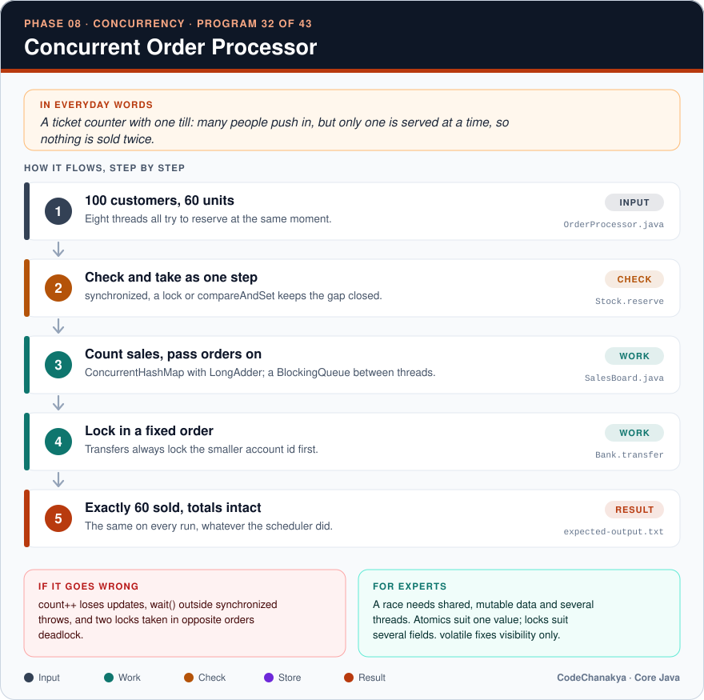

Phase 08 · Concurrency · Program 32 of 43
Concurrent Order Processor
The problem
A shop has 60 units and 100 customers click buy at the same moment. Exactly 60 must succeed. In one thread that is trivial; with many threads the wrong answer appears only sometimes, which makes it the hardest bug in the course.
The program forces a lost update so you can see the cause, then guards the stock three ways (synchronized, ReentrantLock, AtomicInteger), counts sales safely, passes orders through a BlockingQueue and avoids deadlock with a fixed lock order.
See the flow
The whole program as one picture. Read it top to bottom; the colour of each card says what kind of step it is.


If you are new to coding
A ticket counter with one till: many people push in, but only one is served at a time, so nothing is sold twice.
If you are learning
Follow the numbered cards from top to bottom. Open the file named on each card, run the program, and match its output to the last card.
If you are experienced
A race needs shared, mutable data and several threads. Atomics suit one value; locks suit several fields. volatile fixes visibility only.
Text version of the flow
- 100 customers, 60 units (input): Eight threads all try to reserve at the same moment.
- Check and take as one step (check): synchronized, a lock or compareAndSet keeps the gap closed.
- Count sales, pass orders on (work): ConcurrentHashMap with LongAdder; a BlockingQueue between threads.
- Lock in a fixed order (work): Transfers always lock the smaller account id first.
- Exactly 60 sold, totals intact (result): The same on every run, whatever the scheduler did.
Read in this order
- 1LostUpdateDemo.javaA race condition forced to happen every time.
- 2Stock.java and three implementationsOne promise, three ways to keep it.
- 3SalesBoard.java, OrderQueueDemo.javaConcurrentHashMap, LongAdder and a BlockingQueue.
- 4Account.java, Bank.javaTwo locks taken in a fixed order.
The code
package com.codechanakya.processor; /** * The simplest fix: {@code synchronized}. * * <p>Every Java object has one built-in lock, called its monitor. A thread that enters a * {@code synchronized} method takes the monitor of {@code this}, and any other thread that wants * to enter a synchronized method of the same object has to wait outside until the first one * leaves. Only one thread at a time can be inside, so "check, then change" cannot be split in half. */ public final class SynchronizedStock implements Stock { private int units; public SynchronizedStock(int units) { this.units = units; } @Override public synchronized boolean reserve(int quantity) { requirePositive(quantity); if (units >= quantity) { // check ... units -= quantity; // ... then act. No other thread can slip in between. return true; } return false; } /** Reads need the lock too, otherwise a thread could see a stale number. */ @Override public synchronized int available() { return units; } @Override public String name() { return "synchronized"; } static void requirePositive(int quantity) { if (quantity <= 0) { throw new IllegalArgumentException("Quantity must be positive, got " + quantity); } } }
package com.codechanakya.processor; /** * Moves money between two accounts. * * <p>A transfer must hold <em>both</em> locks, or another thread could see the money in neither * account, or in both. That is where deadlock comes from. Imagine thread 1 moves A to B and thread * 2 moves B to A at the same time. If each locks its "from" account first, thread 1 holds A and * waits for B, thread 2 holds B and waits for A, and neither can ever move. * * <p>The cure is a rule everyone follows: <strong>always lock the account with the smaller id * first</strong>. Both threads then try for the same lock first, one of them wins, and the other * simply waits its turn. A cycle cannot form. */ public final class Bank { private Bank() { } /** * @return {@code true} if the money moved, {@code false} if the source did not have enough */ public static boolean transfer(Account from, Account to, long amount) { Account first = from.id() < to.id() ? from : to; // the fixed order Account second = first == from ? to : from; first.lock().lock(); try { second.lock().lock(); try { if (from.balance() < amount) { return false; } from.change(-amount); to.change(amount); return true; } finally { second.lock().unlock(); } } finally { first.lock().unlock(); } } }
Only the key files are shown. The rest are in the repository.
Run it
$ ./run.sh --check
--- Two deposits of 10 into a balance of 100 ---
Right answer : 120
Both read before writing : 110
With a synchronized block: 120
--- 100 customers, 8 threads, 60 units on the shelf ---
synchronized accepted 60, refused 40, left on shelf 0
ReentrantLock accepted 60, refused 40, left on shelf 0
AtomicInteger accepted 60, refused 40, left on shelf 0
Never oversold, whichever way the threads were scheduled.
--- Counting 300 sales from 6 threads ---
{Bag=50, Notebook=100, Pen=150}
--- 3 producers, 2 consumers, one queue of ten ---
Processed 300 orders worth 1197 rupees
--- Telling a worker to stop ---
Worker did some work: true
Worker stopped: true
--- Opposite transfers at the same time ---
Account 1: 1500
Account 2: 500
Total : 2000 (it was 2000 before)
OK: output matches expected-output.txt
This is the real output from OpenJDK 21.0.13 on Linux. It has not yet been run on Java 25, Windows or macOS.
Try it yourself
- Beginner100 customers, 100 units.
- Beginner200 customers, 60 units.
- BeginnerA stock with a synchronized block.
- IntermediateAdd release() to Stock.
- IntermediateRefuse a zero transfer.
- ChallengeTransfer with tryLock and no ordering.
Hints and solutions are in the exercises and solutions folders. Try first.
Break it on purpose
Three files: a counter that really loses updates, wait() outside synchronized, and a deadlock the JVM confirms. The README in the broken folder explains each one.